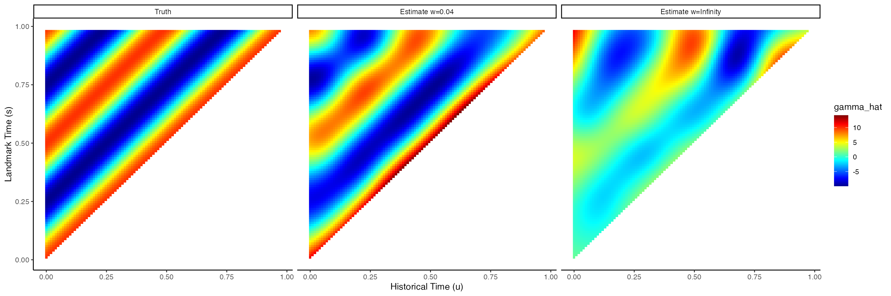

Landmark Historical Functional Cox Regression
Andrew Leroux
2024-06-18
lm_hflm_estimation_prediction.RmdIntroduction
This document shows how to estimate the landmark historical functional Cox regression model and extract estimated quantities of interest. The vigentte is organized in three sections. In the first section, we describe the model mathematically and provide details on the method. In the next section, apply the method to simulated. In the final section we show how to obtain estimated quantities of interest from the fitted model. Note that this vignette is intended to be used in conjunction with the manuscript entitled “Dynamic prediction using landmark historical functional Cox regression” and a number of technical details have been omitted here for brevity. Readers are encouraged to read the manuscript prior to working through this vignette to better understand the methodology involved.
The landmark historical functional Cox model (LM-HFLM)
The landmark historical functional Cox model is a extension of the Cox proportional hazards model for modeling time-to-event data (the outcome) subject to right censoring in the presence of a time-varying covariate. The model allows for the historical value of the time-varying covariate to influence an individual’s risk in a way that varies over the follow-up time. This association is modeled non-parametrically using penalized regression splines.
The landmark approach to modelling time to event data is a conditional approach whereby risk is modeled conditional on surviving up to a set of landmark times through some follow-up period which may be either short or long. Landmark models are a computationally efficient approach to approximating a Cox model where time-varying covariates and/or effects are present. In the case of the landmark historical functional Cox model, the landmark approach is an approximation of the historical functional Cox model. As a result, before describing the LM-HFLCM we first introduce the historical functional Cox model as motivation.
Notation
Before we introduce the model we first define some necessary notation. Let \(i = 1,\ldots,N\) denote individual. Let \(X_i\) be a single time invariant predictor, and let \(Z_{i}(t_{ij})\) denote the \(j^{\text{th}}\) observation of a single time varying predictor at time \(t_{ij}\). We further introduce \(Z_i^{\mathcal{H}}(t) = \{Z_i(s): s \leq t \}\) to denote the history of \(Z(\cdot)\) up to time \(t\). It is assumed that \(Z(\cdot)\) is a continuous and bounded stochastic process. \(Z(\cdot)\) may be observed at regular or irregular intervals and possibly with error.
Next, denote an individual’s true event time as \(T_i\), which is subject to right censoring, denoted as \(C_i\). As a result of censoring, we observe \(T_i^*=\min{(T_i,C_i)}\), and \(d_i = 1(T_i < C_i)\), the event indicator for subject \(i\). The observed data are then \(\{T_i^*, d_i, X_i, Z_i^{\mathcal{H}}(T_i^*): 1 \leq i \leq N\}\). Censoring time is assumed to be independent of the event time given the covariates. For the landmark approach we also require notation related to landmark times. Specifically, we denote the collection of \(L\) landmark times as \(\mathbf{s} = \{s_1, \ldots, s_L\}\) and \(L\) corresponding prediction window lengths \(\mathbf{w} = \{w_1, \ldots, w_L \}\).
The historical functional Cox model
The historical functional Cox model models the additive effect of covariates on the log hazard function. Specifically, consider a time, \(t\). The log hazard function for subject \(i\) is
\[\begin{equation} \log \lambda_i(t|X_i, Z_i^{\mathcal{H}}(t)) = \log \lambda_0(t) + X_i\mathbf{\beta} + \int_0^t Z_i(u)\gamma(u,t)du\;. \end{equation}\]
In the model above, \(\gamma(\cdot,t)\) is the historical effect of the longitudinal predictor on experiencing the event. In trying to interpret \(\gamma(\cdot,t)\), it can be helpful to view it as a “weight” function which weights the relative contribution of the entire history to the risk at the current time. For example, if \(\gamma(u, t)\) is large and positive for values of \(u\) close to \(t\) (recent history), and near \(0\) for values of \(u\) far in the past, then higher recent values of \(Z_i(u)\) are associated with an increased risk of event, while higher historical values contribute little to the current risk.
The landmark historical functional Cox model (LM-HFCM)
The problem with the historical functional Cox model in the context of dynamic prediction can be seen by closer examination of the model. Specifically, predictions of survival for some time \(t\) given data up to time \(s < t\) require the time-dependent covariate, \(Z_i(\cdot)\), all the way up to time \(t\). However, \(Z_i(t)\) is only partially observed, specifically up to \(s\). A landmark approach addresses this problem by using a set of landmark times \(\mathbf{s} = \{s_1, \ldots, s_L\}\) and for each landmark, \(s_l\), focusing on the data for study participants who survived beyond \(s_l\). Combining the idea of the historical functional Cox model with the landmark approach naturally leads to the following landmark historical functional Cox model (LM-HFCM) \[\begin{equation} \log \lambda_i(t|X_i, Z_i^{\mathcal{H}}(s_l),s_l) = \log \lambda_0(t|s_l) + X_i\mathbf{\beta}(s_l) + \int_0^{s_l} Z_i(u)\gamma(u,s_l)du\;, %\hspace{.5in} \mbox{for } s \leq t \leq s + w_l . \end{equation}\] where \(s_l \leq t \leq s_l + w_l\) are the landmark times for \(l = 1,\ldots, L\). A common appraoch is to choose landmark times and prediction windows such that \((s_l, s_l + w_l]\) forms a partition of \((0, t_{\text{max}}]\) with \(t_{\text{max}} = \text{max}(T_1^*, \ldots, T_N^*)\).
LM-HFCM: Estimation
Having introduced the method, we now how show how to estimate the model using simulated data. We first load the data, set up the landmark dataset, and then apply the method.
Setting up the data
The data for this example have been simulated in advance the data contained in this package. These data were simulated using the data generating mechanism of scenario 2 in the manuscript. Code provided below.
## 'data.frame': 42619 obs. of 5 variables:
## $ id : int 1 1 1 1 1 1 1 1 1 1 ...
## $ T : num 0.319 0.319 0.319 0.319 0.319 ...
## $ E : num 1 1 1 1 1 1 1 1 1 1 ...
## $ Z : num 0.957 -0.104 -0.678 -1.012 -1.956 ...
## $ tind: num 0 0.01 0.02 0.03 0.04 0.05 0.06 0.07 0.08 0.09 ...The data are provided in long format, with a column for subject identifier (id), event/censoring time (T, \(T_i^*\)), event indicator (E, \(d_i\)), the longitudinal predictor (Z, \(Z_i(t)\)) and the time of observation for \(Z_i\) (tind, \(t\)).
Once we’ve loaded the data, the next step is to create the landmark dataset. The code below shows how to create the landmark dataset required for model fitting using the make_lm_data function from the dynHFCM package. Here, we fit two LM-HFCM models which use the same set of landmark times (\(\mathbf{s}\)) with two different choices for prediction windows \(w = 0.02\) and \(w=\infty\). Landmark times are chosen to be an evenly spaced grid of length 50 on \([0,1)\). In this way the first set of landmark times/prediction windows forms a partition of the range of the event time (all participants data are administratively censored at \(t=1\)), while the second set of landmark times/prediction windows uses overlapping times.
## grid of observation
tmin <- 0 # time of first observation
tmax <- 1 # time of last observation (administrative censoring)
## landmark times and prediciton windows
S <- seq(tmin, tmax, len=51)[-51] # landmark times for both landmark models
W1 <- diff(c(S, tmax)) # prediction windows for first landmark model (w=0.04)
W2 <- rep(Inf, length(S)) # prediction windows for second landmark model (w=infinity)
## create landmark datasets for estiamting the landmark historical functional Cox models
data_lm_w1 <- make_lm_data(data=hfcm_sim_data, vars_tv="Z",vars_tf=c(), id="id", event_time="T",
time="tind", S=S, wide=FALSE, censor_var="E", w=W1)
data_lm_w2 <- make_lm_data(data=hfcm_sim_data, vars_tv="Z",vars_tf=c(), id="id", event_time="T",
time="tind", S=S, wide=FALSE, censor_var="E", w=W2)We show the structure of the landmark data below. The data are organized by participant (id). From the original data file we know that participant 1 experienced the event at \(T_i = 0.319\). So, this participant will have data for each for the first 16 landmark times. The new landmark dataset has additional columns for the landmark time (s, \(s\)), the corresponding prediction window (w_s, \(w_s\)), the landmark-specific event time (event_time_lm), and the landmark specific event indicator. Because individual id=1 has event beyond the prediction window of \(w=0.02\) for the first several landmark times, their landmark-specific event indicator is \(0\) and event time equal to \(s_l + w = s_l + 0.02\).
str(data_lm_w1)## 'data.frame': 21543 obs. of 11 variables:
## $ id : Factor w/ 1000 levels "1","2","3","4",..: 1 1 1 1 1 1 1 1 1 1 ...
## $ T : num 0.319 0.319 0.319 0.319 0.319 ...
## $ E : num 1 1 1 1 1 1 1 1 1 1 ...
## $ s : num 0 0.02 0.04 0.06 0.08 0.1 0.12 0.14 0.16 0.18 ...
## $ w_s : num 0.02 0.02 0.02 0.02 0.02 0.02 0.02 0.02 0.02 0.02 ...
## $ event_time_lm: num 0.02 0.04 0.06 0.08 0.1 0.12 0.14 0.16 0.18 0.2 ...
## $ event_lm : num 0 0 0 0 0 0 0 0 0 0 ...
## $ tind : 'AsIs' num [1:21543, 1:99] 0 0 0 0 0 0 0 0 0 0 ...
## ..- attr(*, "dimnames")=List of 2
## .. ..$ : chr [1:21543] "1" "1" "1" "1" ...
## .. ..$ : chr [1:99] "1" "2" "3" "4" ...
## $ Z : 'AsIs' num [1:21543, 1:99] 0.957 0.957 0.957 0.957 0.957 ...
## ..- attr(*, "dimnames")=List of 2
## .. ..$ : chr [1:21543] "1" "1" "1" "1" ...
## .. ..$ : chr [1:99] "1" "2" "3" "4" ...
## $ smat : 'AsIs' num [1:21543, 1:99] 0 0.02 0.04 0.06 0.08 0.1 0.12 0.14 0.16 0.18 ...
## $ Z_int_cn : 'AsIs' num [1:21543, 1:99] 0.00928 0.00941 0.00949 0.00972 0.0098 ...
sum(data_lm_w1$id == 1)## [1] 16If we now view the second landmark dataset, with \(w=\infty\), we see that individual id=1 has landmark-specific event indicators of \(1\) and event time equal to their observed time as \(T_i^* = 0.319 < s_l + \infty\) for all landmark times.
str(data_lm_w2)## 'data.frame': 21543 obs. of 11 variables:
## $ id : Factor w/ 1000 levels "1","2","3","4",..: 1 1 1 1 1 1 1 1 1 1 ...
## $ T : num 0.319 0.319 0.319 0.319 0.319 ...
## $ E : num 1 1 1 1 1 1 1 1 1 1 ...
## $ s : num 0 0.02 0.04 0.06 0.08 0.1 0.12 0.14 0.16 0.18 ...
## $ w_s : num Inf Inf Inf Inf Inf ...
## $ event_time_lm: num 0.319 0.319 0.319 0.319 0.319 ...
## $ event_lm : num 1 1 1 1 1 1 1 1 1 1 ...
## $ tind : 'AsIs' num [1:21543, 1:99] 0 0 0 0 0 0 0 0 0 0 ...
## ..- attr(*, "dimnames")=List of 2
## .. ..$ : chr [1:21543] "1" "1" "1" "1" ...
## .. ..$ : chr [1:99] "1" "2" "3" "4" ...
## $ Z : 'AsIs' num [1:21543, 1:99] 0.957 0.957 0.957 0.957 0.957 ...
## ..- attr(*, "dimnames")=List of 2
## .. ..$ : chr [1:21543] "1" "1" "1" "1" ...
## .. ..$ : chr [1:99] "1" "2" "3" "4" ...
## $ smat : 'AsIs' num [1:21543, 1:99] 0 0.02 0.04 0.06 0.08 0.1 0.12 0.14 0.16 0.18 ...
## $ Z_int_cn : 'AsIs' num [1:21543, 1:99] 0.00928 0.00941 0.00949 0.00972 0.0098 ...Fitting the model
Having set up the landmark datasets, the model is estimated easily using the mgcv package. Estimation for both landmark models is extremely fast.
# fit landmark model with w=0.02
st_time_lm_w1 <- Sys.time()
fit_lm_w1 <- gam(cbind(event_time_lm, s) ~ s(tind, smat, by=Z_int_cn), family=cox.ph, weights=event_lm, data=data_lm_w1)
(fit_time_lm_w1 <- difftime(Sys.time(), st_time_lm_w1, units="mins"))## Time difference of 0.06678515 mins
# fit landmark model with w=infinity
st_time_lm_w2 <- Sys.time()
fit_lm_w2 <- gam(cbind(event_time_lm, s) ~ s(tind, smat, by=Z_int_cn), family=cox.ph, weights=event_lm, data=data_lm_w2)
(fit_time_lm_w2 <- difftime(Sys.time(), st_time_lm_w2, units="mins"))## Time difference of 0.06718065 minsLM-HFCM: Working with the fitted obejct
Extracting \(\hat{\gamma}(u,s)\)
A key quantity of interest to extract from the fitted object is the estimated functional coefficient, \(\hat{\gamma}(u,s)\). The code below shows how to do this. To do so we need to first specify a grid of \((u,s)\), \(u < s\) we wish to obtain estimates for. Here we use an evenly spaced grid of length 100 on \([0,\text{max}(\mathbf{s})]\).
nupred_coef <- 100
nspred_coef <- 100
upred_coef <- seq(tmin, max(S), len=nupred_coef)
spred_coef <- seq(min(S), max(S), len=nspred_coef)
## get estimated coefficient
# to get the estimated coefficients, need to evaluate the coefficient using predict.gam with type="terms"
df_pred_lm_coef <- data.frame(tind = rep(upred_coef, nspred_coef),
smat = rep(spred_coef, each=nupred_coef),
Z_int_cn = 1)
df_pred_lm_coef <- subset(df_pred_lm_coef, tind < smat)
gamma_hat_lm_w1 <- predict(fit_lm_w1, newdata=df_pred_lm_coef, type="terms")
gamma_hat_lm_w2 <- predict(fit_lm_w2, newdata=df_pred_lm_coef, type="terms")
## combine results into a single data frame for plotting
df_pred_lm_coef$gamma_hat_w1 <- gamma_hat_lm_w1[,"s(tind,smat):Z_int_cn"]
df_pred_lm_coef$gamma_hat_w2 <- gamma_hat_lm_w2[,"s(tind,smat):Z_int_cn"]The code below plots the true function along with the landmark model estimates. We can see that, as expected, the landmark model with \(w=0.04\) estimates the truth much more closely than the model with \(w=\infty\) due to bias associated with the long prediction window.
## add in the true coefficient value
df_pred_lm_coef <-
df_pred_lm_coef %>%
mutate(gamma_true = cos(2 * pi * (smat-tind) / 0.5) * 10)
## plot the results
# transform to long format for faceting then plot
df_pred_lm_coef %>%
pivot_longer(cols=c("gamma_hat_w1","gamma_hat_w2","gamma_true"),
names_to = "result", values_to="gamma_hat") %>%
mutate(result = factor(result, levels=c("gamma_true","gamma_hat_w1","gamma_hat_w2"),
labels=c("Truth","Estimate w=0.04","Estimate w=Infinity"))) %>%
ggplot() +
geom_raster(aes(x=tind,y=smat,fill=gamma_hat)) + facet_grid(~result) +
scale_fill_gradientn(colours=fields::tim.colors(50)) + theme_classic() + xlab("Historical Time (u)") +
ylab("Landmark Time (s)")